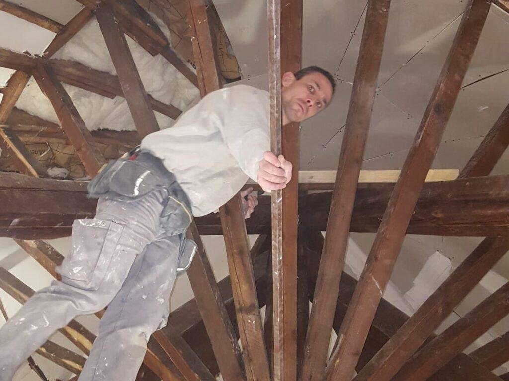
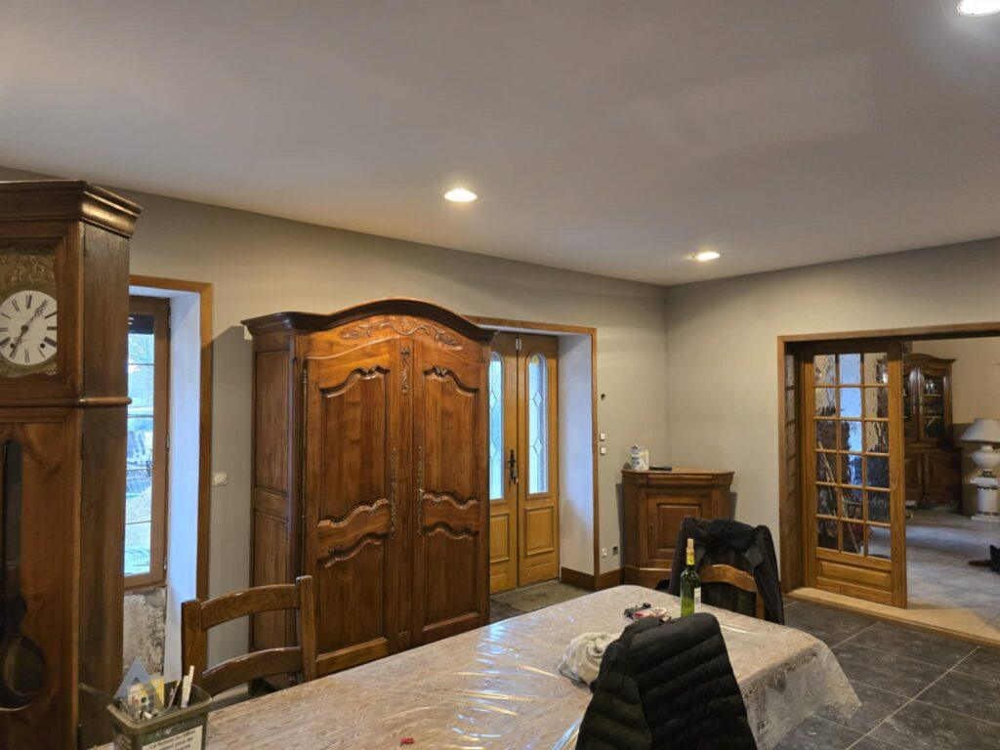
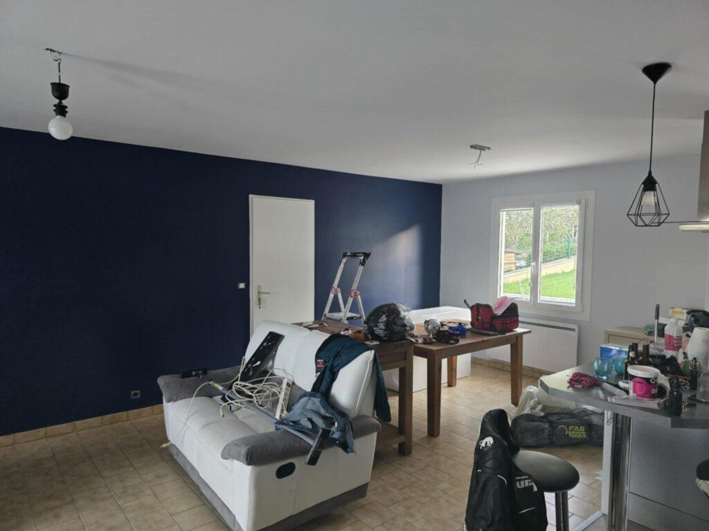
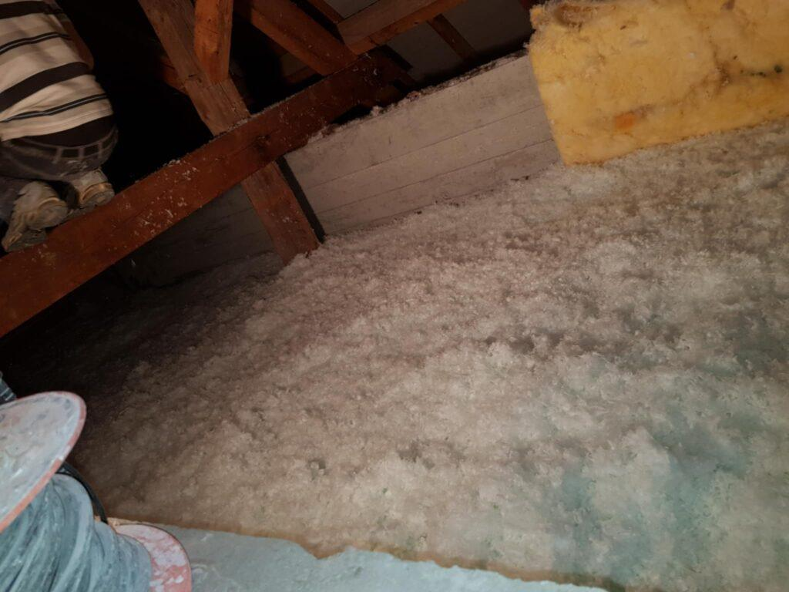
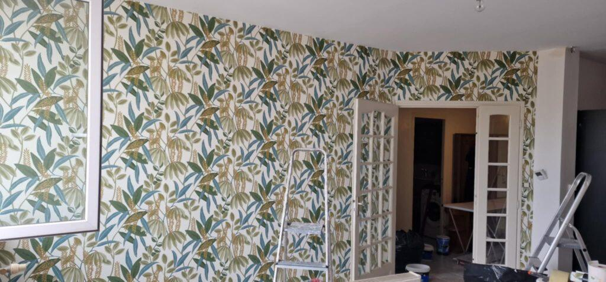

Plâtrier, peintre et isolation à Vichy
JG Concept Rénovation intervient à Vichy pour vos travaux de plâtrerie, de peinture, d'isolation et de revêtements de sols et murs. Visite et devis gratuits.

Nos travaux à Vichy
Ville thermale aux nombreux immeubles Belle Époque et Art nouveau, Vichy est inscrite depuis 2021 au patrimoine mondial de l'Unesco parmi les « Grandes villes d'eaux d'Europe ». Ses appartements anciens demandent souvent des reprises de plâtre et de moulures, et une isolation par l'intérieur discrète.
C'est à Vichy que le grand-père de Jefferson Gonon travaillait déjà sur les façades Art nouveau dans les années 1970. Nous y réalisons aujourd'hui des chantiers de plâtrerie traditionnelle, de peinture et de rénovation complète, comme la restauration d'un dôme près de la Rotonde de Vichy.
Nos métiers

Plâtrerie et plafonds
Cloisons, doublages, faux plafonds, plâtre traditionnel et moulures.
Découvrir
Peinture
Murs, plafonds et boiseries, avec une vraie préparation des supports.
Découvrir
Isolation
Combles, murs et planchers, avec des isolants adaptés à votre logement.
Découvrir
Sols et murs
Parquet, vinyle, carrelage, papier peint et toile de verre.
DécouvrirPourquoi nous choisir à Vichy
- Une entreprise localeBasée à Saint-Rémy-en-Rollat, au cœur du bassin de Vichy.
- Prix nets, sans TVAMicro-entreprise : TVA non applicable.
- Assurée en décennaleTous nos travaux sont couverts, attestations sur demande.
- 32 avis 5 étoilesSur Google, PagesJaunes et AlloVoisins.
Les communes de ce secteur
Vichy est à 0,4 km de Vichy. Depuis cette page, nous couvrons ces 2 communes pour la plâtrerie, la peinture, l'isolation et les sols.
Voir toute la zone d'intervention- Charmeil 03110
- Vichy 03200
Vos questions à Vichy
Une autre question ? Appelez-nous au 06 26 72 61 93.
Intervenez-vous dans les immeubles du centre de Vichy ?
Oui. Nous travaillons régulièrement dans des appartements d'immeubles anciens, en coordination avec le syndic si les travaux touchent les parties communes.
Pouvez-vous restaurer des moulures et des plafonds anciens ?
Oui, c'est une de nos spécialités. Nous reprenons les plâtres à l'ancienne, les corniches et les rosaces, et nous savons réaliser des plafonds courbes.
Nos autres secteurs
Un projet de rénovation ? Parlons-en.
Nous venons voir les lieux gratuitement et vous remettons un devis détaillé sous 72 heures.